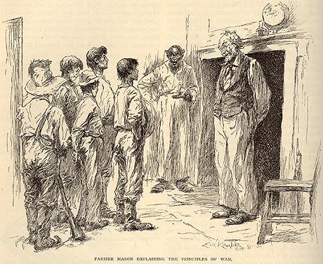

"The Private History of a Campaign That Failed"
The Century Magazine, December 1885

MT's mainly mock-heroic account of his two weeks as a
Confederate irregular appeared less than a year after Huck
Finn, in the same magazine that had published excerpts of the
novel, and with illustrations by E. W. Kemble, the artist MT
hired to do the pictures for the novel. Slavery as an issue is
treated comically at the start of the story: as states begin
seceding, MT's loyalty to the Union is suspected "because my
father had owned slaves," but a bit later the same friend
suspects MT's new allegiance to the Confederacy because he had "a
father who had been willing to set slaves free."
One slave appears in the story: when Farmer Mason orders
"one of his negroes" to show MT's inept band of rangers where to
hide from a Yankee patrol. Presumably this is the slave Kemble
means to represent in the drawing above, though "the
negro" is not mentioned in the text's account of Mason making fun
of these very irregular soldiers.